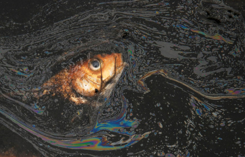
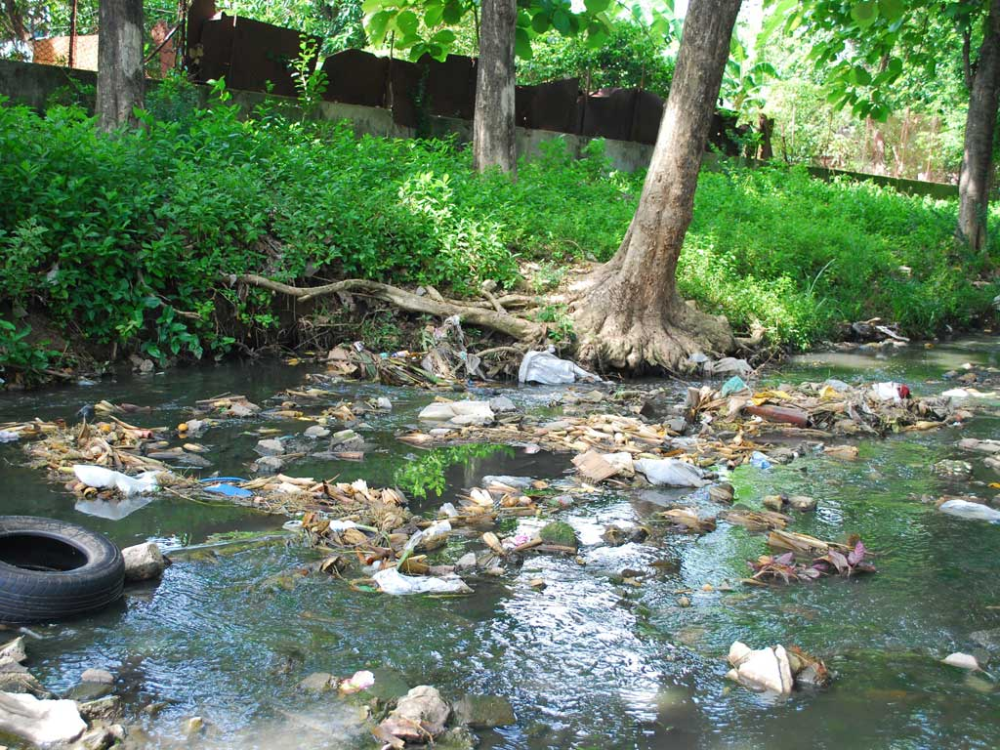
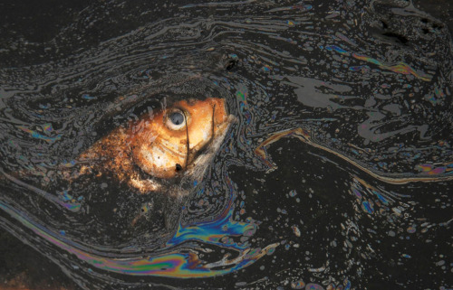
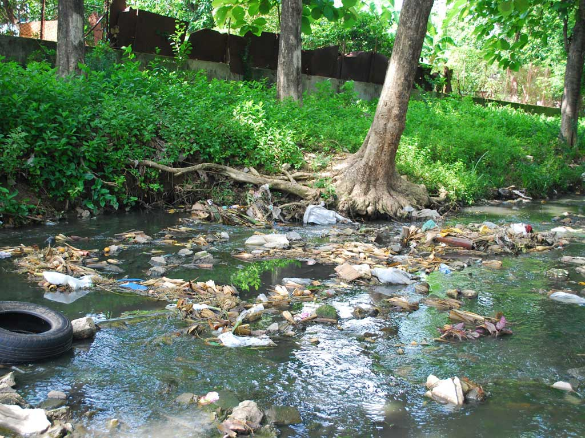
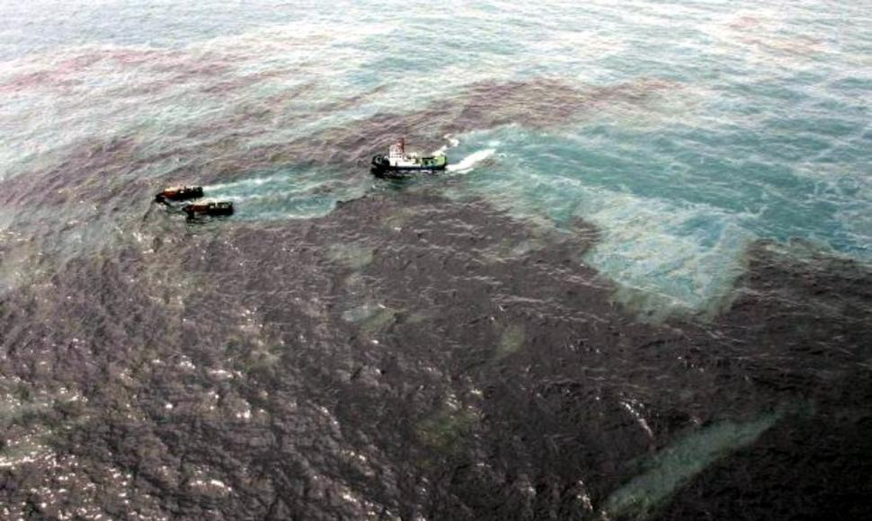
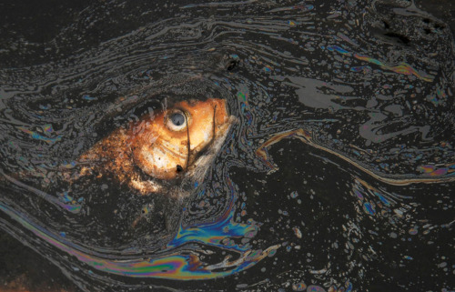
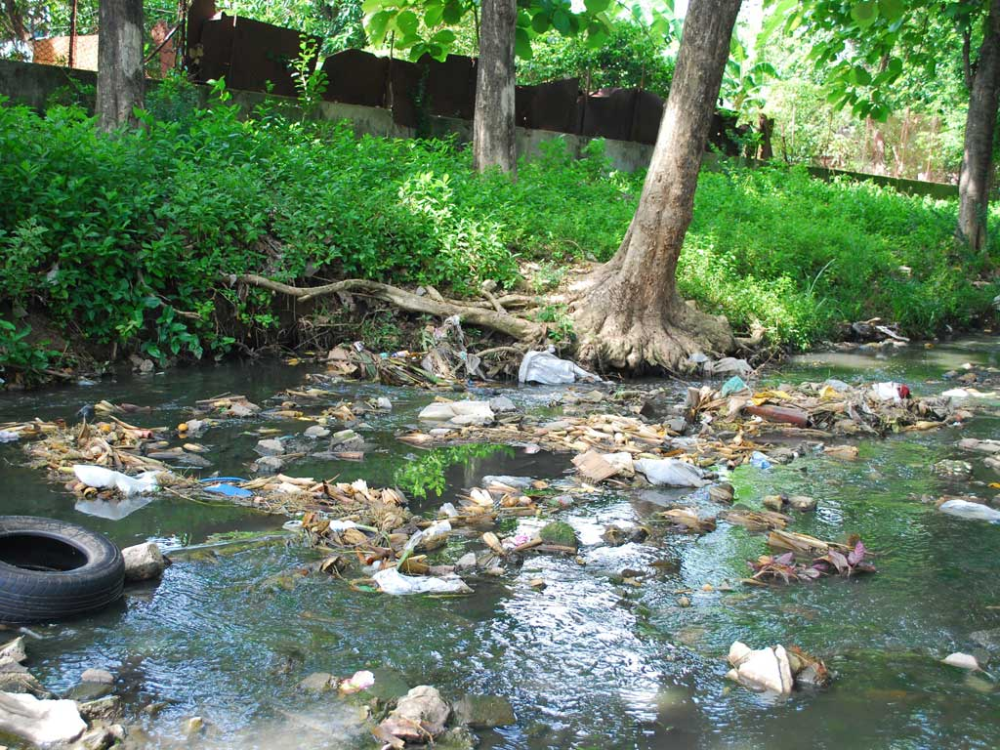

Contaminacion de las aguas marinas y continentales
La contaminacion del agua puede ser visible en las espumas de los rios, la basura domestica arrojada en los arroyos, la capa de aceite en la superficie de los rios, los derrames de petroleo, entre otras. No obstante, gran parte de la contaminacion no se ve, por que los lagos afectados por la lluvia acida lucen sanos.

En cuanto a los recursos naturales, la contaminacion se da debido a la explotacion del petroleo y el gas, los minerales de fondo como arenas negras, gravas diamantiferas, carbonatos, entre otros: ademas de las centrales mareomotrices que producen energia electrica a partir de la energia de los mares. La extraccion de organismos marinos para la alimentacion y con otros fines como el farmaceutico, ornamental, construccion, etcetera. Un ejemplo es la extraccion del caracol purpura (Plicopurpura pansa). Entre las pesquerias mas importantes se encuentra el atun, la anchoveta y las anchoas, camarones, langosta, moluscos y tiburones, por mencionar algunos